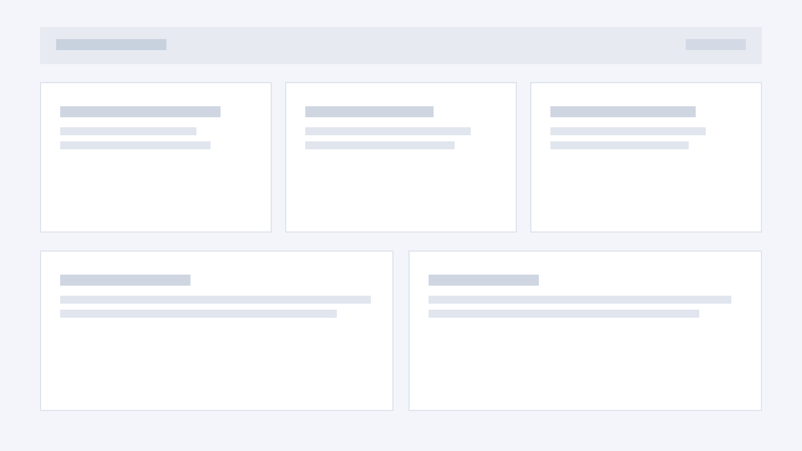
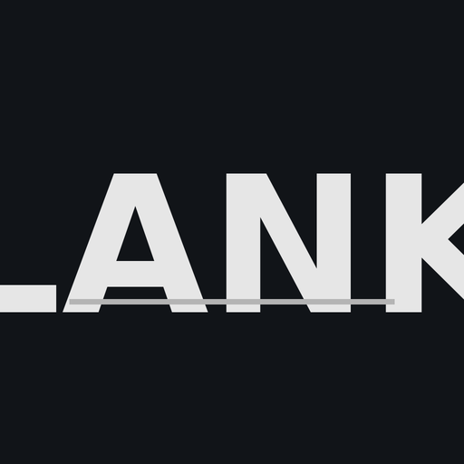

Текст «ВИННИПУ», палец завис над «Х».


Мы начали с проектирования. Изучения. Чертежа.
Не с выбора планшета. Не с выбора цвета.
С вопроса о среде, созданной только для письма.


Текст «ВИННИПУ», палец завис над «Х».

Наклон от себя: вид сбоку/торец, экран не читаем.

Текст обращен к собеседнику. Взрослый: «Хорошо, посмотри.»

Возврат к персональному режиму ввода.
Написал -> Показал -> Получил реакцию -> Продолжил.



Не случайный импульс, а устойчивая предъявленная мысль, к которой можно вернуться.
